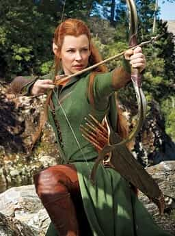

< < < Back
The New Ghostbusters Movie Will Be Ruined By The Feminist Agenda – Return Of Kings
Hollywood has done it again— and by “it,” I mean taking a franchise that features men as heroes and transformed it into yet another casualty of fashionable feminism. This is especially hypocritical considering that this movie is based on a franchise that features men as heroes and was judged as sexist by feminists for featuring only males as the heroes.
Slinging ectoplasm is man’s work
Like the proverbial kid sister who would fume at the fact that her brother and his friends would lock her out of the male only clubhouse, the feminists and their mangina accomplices in the media once again demonstrate their need to forcibly intrude upon any perceived male bastions. Their solution? Take the all male cast and replace it with an all female cast, thereby sending the message that it’s ok to be sexist, so long as you’re sexist against men…then it isn’t really sexist, but gender equality.
Recently in Entertainment Weekly, Paul Feig, director of that wonderful feminist cop fantasy “The Heat,” was quoted as saying that he wanted to reboot the franchise by taking it in an entirely new direction with an all-female cast, while not ruining the memory of the previous all male cast.
The question begs to be asked: how do you show respect to the cast of Ghostbusters 1 and 2 by completely eliminating the history that those installments created in a second sequel?
The answer is: you don’t. In the creative mind of Hollywarped, you show respect to the fans of a franchise by creating a new franchise from the raped carcass of the original. Like a xenomorph springing from the chest of yet another unfortunate host, the end result is less than the core audience expected, and more than anyone in the victim’s place would want.
Is there a need for a reboot?
Why should this franchise be rebooted in the first place? Why eliminate the legend that helped make it a successful and beloved franchise in the eyes of many? Surely a new Ghostbusters featuring the sons (and daughters) of the core list of characters would have appealed just as much, if not more, to the main Ghostbusters audience and those less familiar with the franchise, so why neuter the Ghostbusters completely? This defies all logic—to say nothing of the fact that having the corpulent Melissa McCarthy run around the city with a 35-lb proton pack strapped to her girth defies the laws of physics.
Her next movie will be a starring role in the remake of The Blob
Wouldn’t it have been fair to include both sexes as the next generation of Ghostbusters, in order to show respect to what was presented before? As the Shakespearean bard would say, therein lies the rub. It’s not about fairness to feminists, it’s about presenting women as superior to men, especially in instances where men are presented in a positive light and there is no female around to share in the glory. Sigourney Weaver’s character didn’t count, she was the damsel in distress and Janine was the comedy relief. In the eyes of feminists, this is especially unacceptable.
The adage “if it ain’t broke don’t fix it” doesn’t seem to apply in Hollywarped, especially when you factor in the feminist agenda affecting this and similar movies. I suppose the phrase “if it ain’t got estrogen, be sure and inject some” might be more fitting.
I have no problem with seeing a woman (especially a beautiful one) in a testosterone-driven plot provided she is relevant to the story and does not exist mainly to push some leftist gender-specific agenda. How many of today’s major movies that you can name didn’t have a token feminist representation in the lead or in a supporting role? Exactly.
Given this, I’m almost surprised Bilbo and company from The Hobbit film series didn’t have to deal with an empowered female hobbit on their wonderful quest. Oh wait, there’s just one thing…Tauriel substituted for that. As any reader of the series is well aware, she was made up for just that purpose, to offset all that dangerous Middle Earth masculinity the film series was in danger of providing. Peter mangina Jackson created this character with the help of two female writers. Mission accomplished.
Don’t call me Link, i don’t know who that is.
This situation isn’t like to get fixed anytime soon, so long as mainstream cinema continues to churn out cinematic estrogen like chum for the consumption of the masses. Drivel like Lucy is becoming par for the course, and Ghostbusters 3 looks to be proudly following in this new tradition.
A bit of nostalgia
Remember when real men used to be represented onscreen as real men? Who can forget Vito Corleone in The Godfather, especially that memorable scene where he smacks Johnny Fontane? Vito was obviously a red pill man who dealt with matters the red pill way. Nowadays it’s more common to see a male represented as an ignoramus or a weakling, or seeing women acting like men.
In today’s twisted society, Johnny Fontane has become the norm and Vito Corleone has become the exception. I doubt Ghostbusters 3 is going to be any less twisted in pushing its cinematic feminist agenda.
Oh what a brave new world, that has such wonderfully feminist, sexist people in it.
 If you like this article and are concerned about the future of the Western world, check out Roosh's book Free Speech Isn't Free. It gives an inside look to how the globalist establishment is attempting to marginalize masculine men with a leftist agenda that promotes censorship, feminism, and sterility. It also shares key knowledge and tools that you can use to defend yourself against social justice attacks. Click here to learn more about the book. Your support will help maintain our operation.
If you like this article and are concerned about the future of the Western world, check out Roosh's book Free Speech Isn't Free. It gives an inside look to how the globalist establishment is attempting to marginalize masculine men with a leftist agenda that promotes censorship, feminism, and sterility. It also shares key knowledge and tools that you can use to defend yourself against social justice attacks. Click here to learn more about the book. Your support will help maintain our operation.
Read More: 5 Things I Learned From Call of Duty


{kind=link}
{kind=link}
{kind=link}